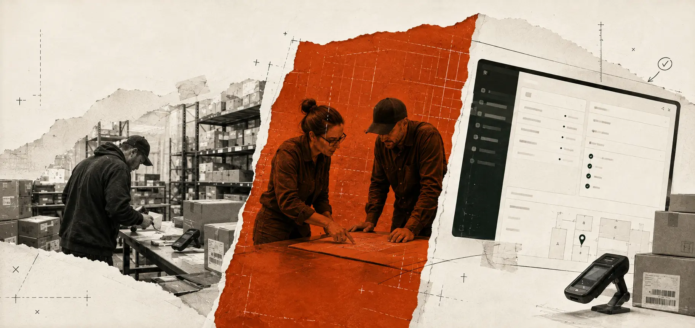

WHY FORWARD DEPLOYED ENGINEERING
See the work.Shape the system.
FDE turns real operations into practical software.

- 01
Listen
People, handoffs, constraints.
- 02
Frame
Workflow into clear requirements.
- 03
Build
Software in daily use.